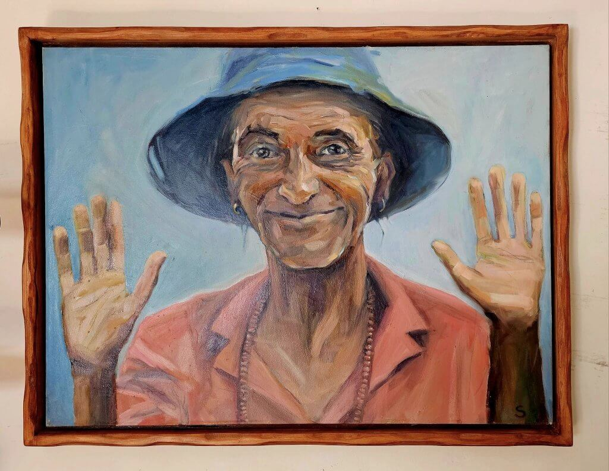

א׳
שער אחד
מבקר מבין תוך שניות מה קורה עכשיו; שאר האתר דרך התפריט הראשי.

Hero מלא רוחב — תמונה או וידאו קצרבלוק חדשות / אירוע מרכזי — מקום אחד בולט לעדכון
כרטיס משני
(שירות / מוצר)
(שירות / מוצר)
כרטיס משני
(בלוג / תוכן)
(בלוג / תוכן)
כרטיס משני
(קורסים / קישור)
(קורסים / קישור)